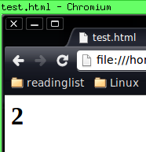
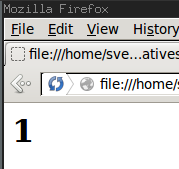

Programming the browser is hard
Alternatives to Javascript
Javascript overview
a dynamic prototype based language
- since 1996 (Netscape 2)
- 1999 ECMAScript 3
- 2005 Ajax
- Standard unchanged until 2009: ECMAScript 5
- 2011 ECMAScript 5.1
Current state
... The good parts
- generally: we have lambdas and objects
- "use strict"
- much more consistent across browsers than it used to be
- Even (modern) mobile browsers ECMA 5.1 compatible
- greatly improved tooling
- People care about JS
-> best practises, books, libraries
Current state
Some bad parts
Language issues
JS is too forgiving - for it's own bad
- Function parameters not enforced
- rather returns NaN or null instead of error
- complex: many ways to do the same thing
- this causes unexpected, mystical, hard to debug behavior.
Language issues
Dynamic typing
- dynamic typing and late binding
- means highly dependent on unit testing
- but hard to test when DOM is involved
- awful type casting
Language issues
shared mutable state
- callbacks and lambdas vs shared mutable state.
- espacially bad in combination with global scope
- single threaded eventloop also no guarantee for correct concurrency.
- example on next slide
Language issues
shared mutable state


What now?
a) Learn JS
Just know what you're doing
and deal with what we have
What now?
b) Look for improvements
- General purpose Javascript frameworks
- small Javascript libraries
- ECMAScript 6 (Harmony)
- Alternative languages
Frameworks
Work with simplified abstractions
examples: jquery, mootools, dojo, prototype
Benefits
- Framework DSLs = more concise sytax than native js
- rich set of functions for easier data processing
- work on a higher abstraction level
-> hide the dirty work like browser incompatibilities
- more often updated than the language
- latest jquery solves endless callback nesting by introducing promises
Frameworks
Work with simplified abstractions
But..
- Still javascript
- General purpose frameworks are often overkill
- frameworks do not always do things the way you want
Small Libraries
Specialized > general purpose
- Instead of large framework like jquery use specialized libs
- do one thing, but do it well
- same benefits otherwise (abstraction, syntax)
- compose with other small libs to get exactly what you need
- example: when.js instead of jquery promises
ECMAScript 6
Wait for the next standard
- Work in progress
- It's a huge spec, will add many new features
- Will certainly also fix many issues
But..
- Won't change Javascript fundamentally
- Can't use it NOW
Compile to Javascript
There is a long list of languages that compile to JS
altjs.org
Compile to Javascript
(Potential) Benefits
... or what I would consider benefits
- Static typing and type checking
- In some cases, re-use tooling from other langs
- modern, concise syntax
- correctness!
- Language-enforced modularity -> maintainable codebases by default
- Size of processed JS should not be larger than handwritten JS - if gzipped
- Performance gains
Compile to Javascript
Drawbacks
- Harder to get "up and running"
- Debugging? Errors not caught by compiler point to produced js.
- Need a build system
- Depending on language, you face a learning curve
- This is a rather new thing - compiler bugs to be expected
- performance gains not guaranteed. In many cases it could go down as well
- Does not solve DOM-testing problems
JS to JS
Google Closure
- compiles javascript to (optimized) javascript
- Not only compression, but algorithm optimizations aswell
- Compiler will provide errors - kinda like jslint
- Also comes with library: widgets, controls, templating
- Can be used like YUI or JAWR -> low hanging fruit
Languages that improve JS
Conciseness: Coffeescript
- Coffeescript is very close to JS, with less typing
- Same semantics, more pleasant syntax
- Therefore, you can convert both ways: js2coffee.org
- Examples
Languages that improve JS
Types: TypeScript
- Microsoft's Typescript adds Types. Yay!
- Also adds classes (like proposed in ECMAScript6)
- Superset of javascript. So JS is valid TypeScript
Coffescript, Typescript and relatives
- familiar syntax and programming model
-> easy to get started
- Compilers available as node packages
- tooling includes on-the-fly mode for development
- CoffeeScript widely adopted.
- TypeScript adds what's lacking most: Types
Completely new langs
Functional langs: immutable, no side effects. higher-order-functions
roy
- inspired by haskell.
- experimental status
- tries to keep JS semantics. adds types and functional principles
- Interop with js as a goal
- Therefore not completely pure and immutable
elm
- "Functional Reactive Programming"
- avoid callbacks by providing "Signals" ( abstractions for time )
- Produces not only js, but also markup and CSS
- reason: maintain immutability
- Examples (external site)
Establised Languages to JS
use established compilers
These two bring established statically typed functional langs to JS
Compiling C/C++ is especially useful for porting 3D/games
Hybrid languages
Compile to multiple platforms - JS beeing one of them
Some examples
The future
asm.js
- a spec defining a strict subset of javascript.
- intended as low-level, efficient target language for compilers
- prototype of an optimizing backend for asm.js in progress for Mozilla's SpiderMonkey engine
- http://asmjs.org/spec/latest/
Honorable mentions
- GWT
- Compile Java to JS and markup
- probably the first x -> JS compiler (2006)
- Dart
- received mostly negative attention
←
→
#